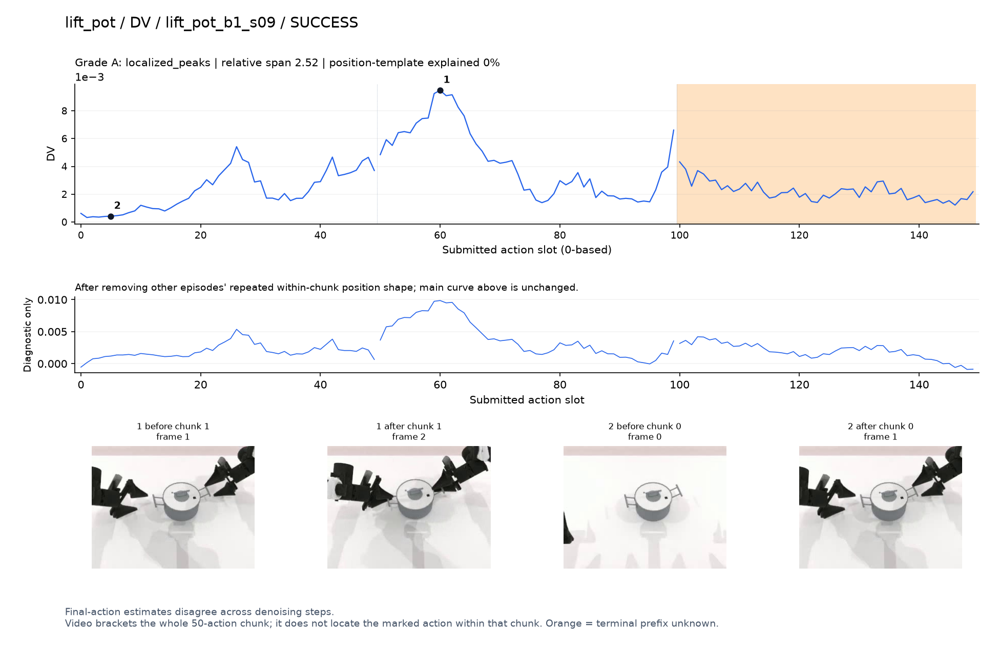
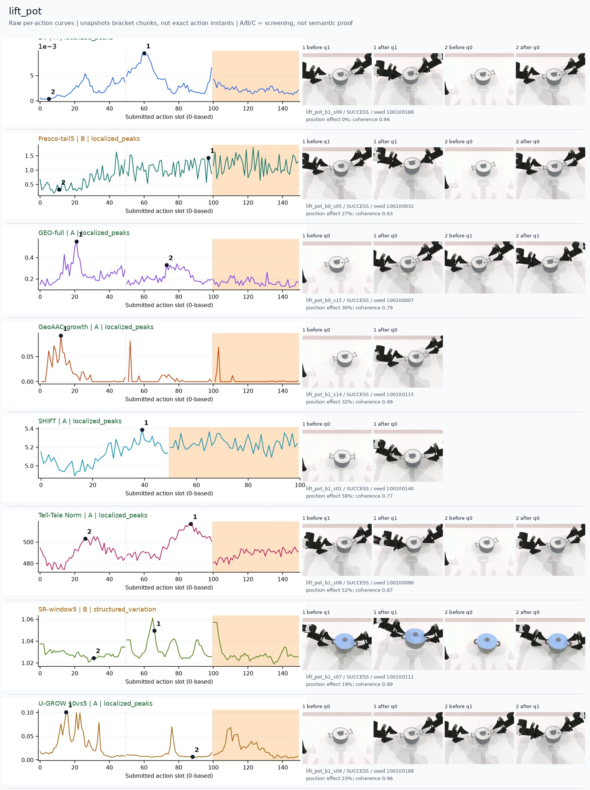
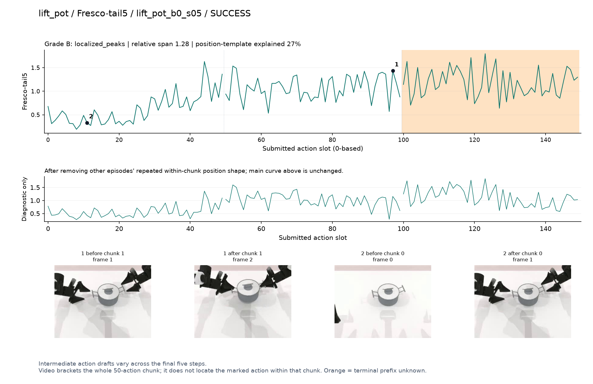
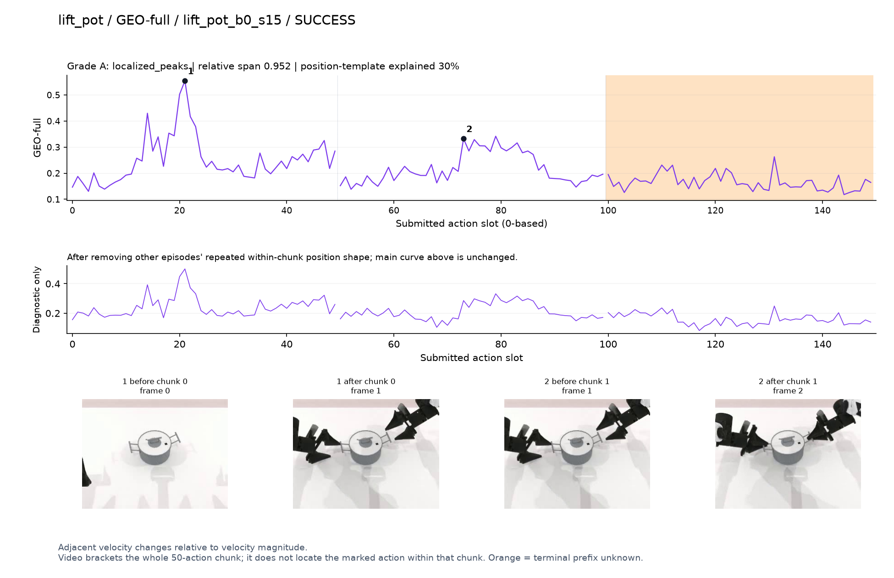
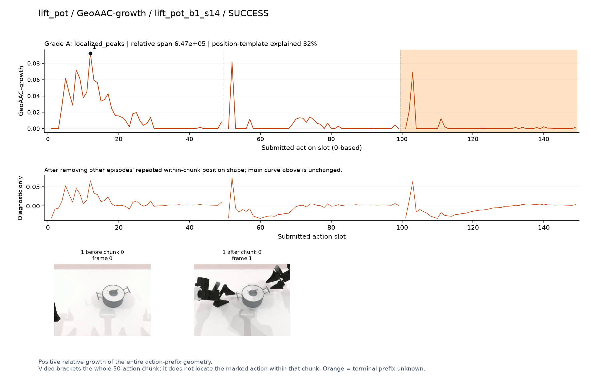
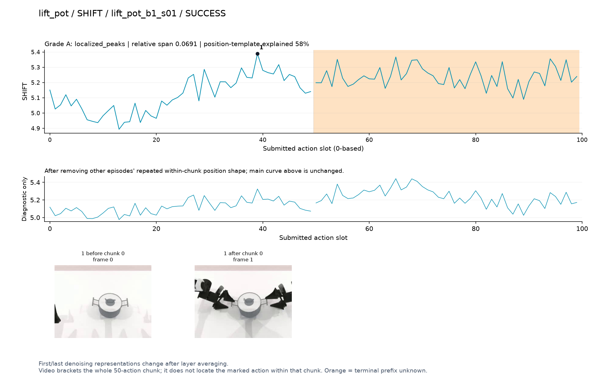
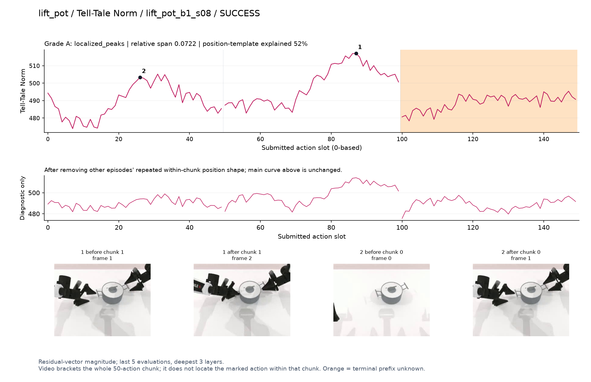
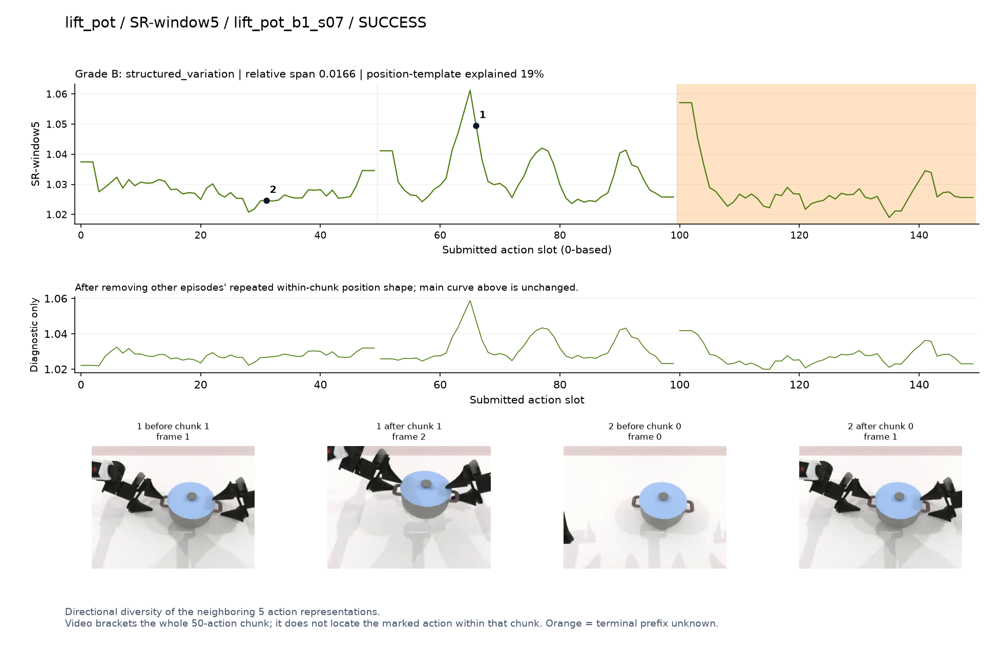
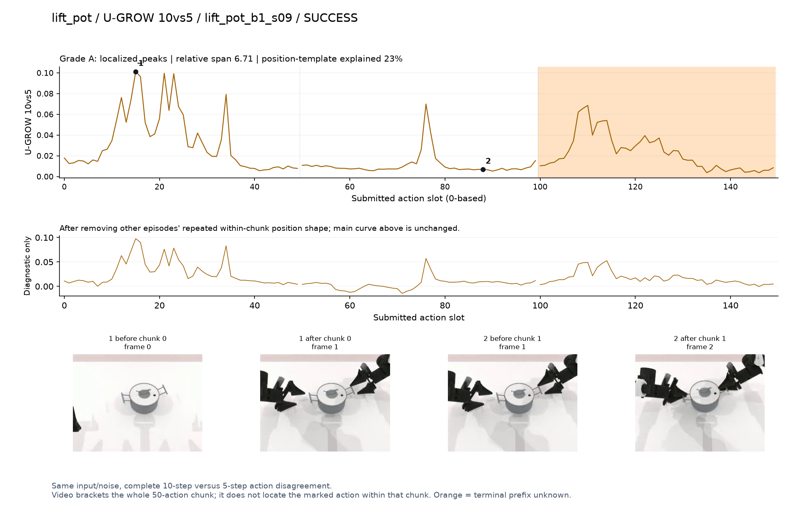

DV · A · localized_peaks
Final-action estimates disagree across denoising steps.
SVG · metadata
Only pre/post chunk frames were recorded. A visible stage transition is a candidate explanation, not proof of a contact instant. Main plots preserve every action score.
人工看图复核：dv [candidate] 候选：q1双手对准锅两侧手柄时峰清楚。
fresco [weak] 弱阶段趋势：接近后整体抬高，逐动作抖动仍密集。
geo [candidate] 候选：q0接近锅和q1握持准备两段高区。
geoaac [confounded] 谨慎：q0接近阶段较高，同时各chunk开头有窄尖峰。
shift [weak] 弱阶段候选：接近锅时先低后高，但位置模板与路径长度混杂强。
norm [candidate] 阶段候选：双手靠近、握持锅的两段宽峰；位置效应也较大。
sr [candidate] 候选：q1提锅附近内部局部峰，但仍有边缘效应。
ugrow [candidate] 候选：q0双手伸向锅柄时集中高区。

Final-action estimates disagree across denoising steps.
SVG · metadata
Intermediate action drafts vary across the final five steps.
SVG · metadata
Adjacent velocity changes relative to velocity magnitude.
SVG · metadata
Positive relative growth of the entire action-prefix geometry.
SVG · metadata
First/last denoising representations change after layer averaging.
SVG · metadata
Residual-vector magnitude; last 5 evaluations, deepest 3 layers.
SVG · metadata
Directional diversity of the neighboring 5 action representations.
SVG · metadata
Same input/noise, complete 10-step versus 5-step action disagreement.
SVG · metadata